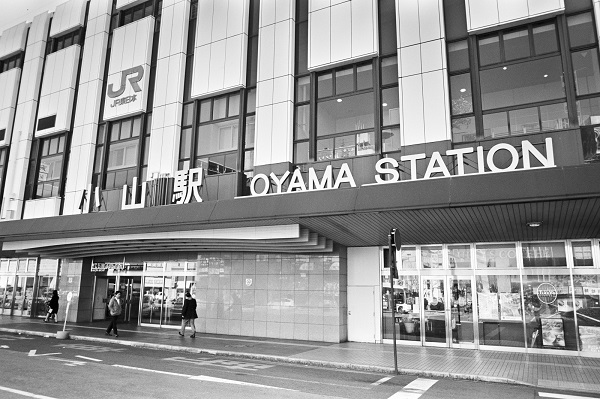
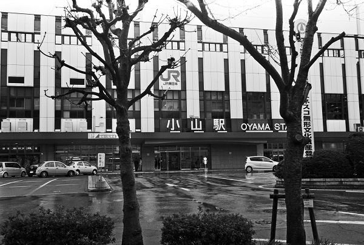

JR 小山駅 Oyama
間々田駅←← 宇都宮線 →→ 小金井駅思川駅←← 両毛線
水戸線 →→ 小田林駅

2019/3/18 ﾍｷｻｰRF ｶﾗｰｽｺﾊﾟｰ25mm ｱｸﾛｽ

2018/11 ﾐﾉﾙﾀCLE ｽﾞﾐｸﾛﾝ35mm ｱｸﾛｽ

2018/11 ﾐﾉﾙﾀCLE ｽﾞﾐｸﾛﾝ35mm ｱｸﾛｽ

2018/11 ﾐﾉﾙﾀCLE ｽﾞﾐｸﾛﾝ35mm ｱｸﾛｽ

2018/3/16 ﾐﾉﾙﾀCLE 35mm ｱｸﾛｽ

2018/3/16 ﾐﾉﾙﾀCLE 35mm ｱｸﾛｽ

2018/3/16 ﾐﾉﾙﾀCLE 35mm ｱｸﾛｽ

2018/3/18 ﾐﾉﾙﾀCLE 35mm ｱｸﾛｽ

2014/9